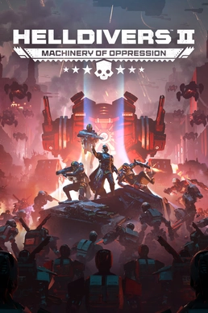

Shooter · 2024
Helldivers 2
Friendly fire as comedy, inside a galactic war that actually moved.

Cover: Wikipedia: Helldivers 2
Facts
- Released
- 2024-02-08
- Genre
- Co-op Shooter
- Category
- Shooter
- Platforms
- PC, PlayStation, Xbox
- Developers
- Arrowhead Game Studios
- Publishers
- Sony Interactive Entertainment
PC requirements
- Minimum
- [object Object]
- Recommended
- [object Object]